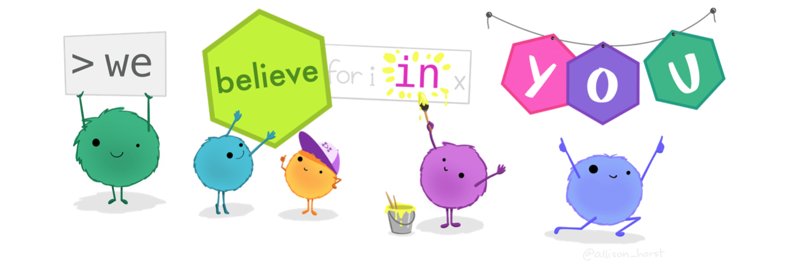

An Introduction to Data Analysis

Foreword
This work in progress is ultimately going to be the primarily textbook resource for EPSY 5261 students. (Note: If you want to contribute to this, create a Pull Request or send me an email.) Also, feel free to offer criticism, suggestion, and feedback. You can either open an issue on the book’s github page or send me an email directly.
Acknowledgments
Many thanks to all the students in our courses who have provided feedback; you are the world’s greatest copyeditors. In particular, we would like to thank the following students who found errors and took the time to let us know: Drake Bauer, William Cornejo, Guobin Pan, and Joel Sundstrom.
Colophon
Artwork by @allison_horst
Icon and note ideas and prototypes by Desirée De Leon.
The book is typeset using Crimson Text for the body font, Raleway for the headings and Sue Ellen Francisco for the title. The color palette was generated using coolors.co.
Statistical Computing
- Laptop icon made by Tomas Knop from www.flaticon.com
- Directory icon made by Darius Dan from www.flaticon.com
- Brain icon made by Aranagraphics from www.flaticon.com
- Internet icon made by Freepik from www.flaticon.com
License

This work is licensed under a Creative Commons Attribution-ShareAlike 4.0 International License.